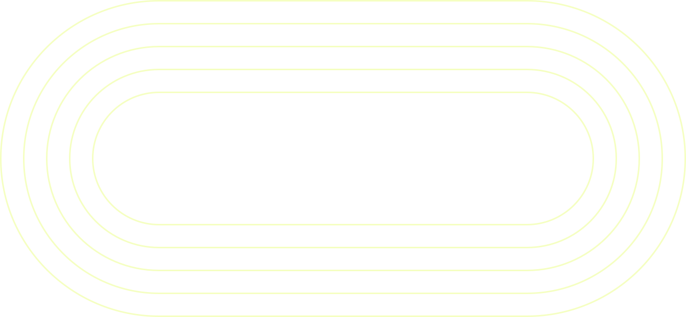

따라가야 할까, 걱정되는 날
누군가와 달리고 싶어도 속도가 신경 쓰일 수 있어요.
나와 맞는 페이스로
비슷한 속도로 달리는 사람과 나란히 달리는 시간.
가까운 곳에서, 맞는 모임을
런메이트에서 지역과 페이스로 모임을 직접 검색할 수 있어요.
내 페이스로, 함께 달리는 시작
프로필 링크에서 내 주변 러닝 모임을 찾아요.

카드뉴스 5장 · 가상 브랜드 콘셉트 시안 · 각 카드 아래에서 확대할 수 있어요.
전체 보기누군가와 달리고 싶어도 속도가 신경 쓰일 수 있어요.
비슷한 속도로 달리는 사람과 나란히 달리는 시간.
런메이트에서 지역과 페이스로 모임을 직접 검색할 수 있어요.
프로필 링크에서 내 주변 러닝 모임을 찾아요.
